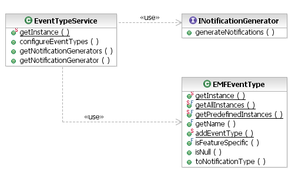

Live validation determines the constraints to evaluate by the events that they declare as triggers. By default, support is provided for the standard event types defined by EMF: SET, ADD, REMOVE, etc. However, sometimes these are too fine-grained, and accurately specifying the triggering events for different features could be difficult, verbose, or even impossible.

[as SVG]
Enter the notification generator. This facility allows clients to define custom event types that are more abstract. For example, a constraint might be triggered on additions or removals in any containment feature. So, an application can register a custom "ContainmentChange" event type on the org.eclipse.emf.validation.eventTypes extension point.
<extension
point="org.eclipse.emf.validation.eventTypes">
<eventType
name="ContainmentChange"
featureSpecific="false"
notificationGenerator="org.eclipse.example.ContainmentNotificationGenerator">
</eventType>
</extension>
The name attribute specifies the non-localizable name that clients will use in their live constraint declarations as a trigger. If the event type is feature-specific, then clients can also specify features to match along with the event type. If the event type is not feature-specific, then it is considered to apply to the notifier element as a whole.
The other key component of the event type declaration is the notificationGenerator. This indicates a class implementing the INotificationGenerator that will be called upon during live validation to analyze the list of raw Notifications and compute the custom notifications, if any. Custom events created in this way are not fed recursively through the generation process; only the basic notifications from the EMF content are processed in this way.
Custom event types are created implicitly by accessing their static instances in the EMFEventType. The framework automatically assigns them unique event type IDs that are different from those pre-defined by EMF.
public Collection generateNotifications(Collection notifications) {
Collection result = new ArrayList();
for (Iterator iter = notifications.iterator(); iter.hasNext(); ) {
Notification notification = (Notification) iter.next();
Object feature = notification.getFeature();
if ((feature instanceof EReference) && ((EReference) feature).isContainment()) {
Collection children = Collections.EMPTY_SET;
switch (notification.getEventType()) {
case Notification.ADD:
child1 = Collections.singleton(notification.getNewValue());
break;
case Notification.REMOVE:
child1 = Collections.singleton(notification.getOldValue());
break;
case Notification.SET:
case Notification.UNSET:
children = new ArrayList(2);
children.add(notification.getNewValue());
children.add(notification.getOldValue());
break;
case Notification.ADD_MANY:
children = (Collection) notification.getNewValue();
break;
case Notification.ADD_REMOVE:
children = (Collection) notification.getOldValue();
break;
}
// create a ContainmentChange event from the child's perspective.
// The EMFEventType class guarantees unique event type codes
for (Iterator iter = children.iterator(); iter.hasNext();) {
result.add(new ENotificationImpl(
(InternalEObject) iter.next(),
EMFEventType.getInstance("ContainmentChange").toNotificationType(),
Notification.NO_FEATURE_ID, // non-feature-specific example
null, null));
}
}
}
return result;
}
Copyright (c) 2000, 2007 IBM Corporation and others. All Rights Reserved.